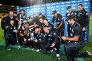
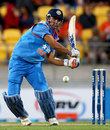

| Series | Countries | Live Scores | Fixtures | Results | News |
Features
|
Photos | Video & Audio | Blogs | Statistics | Archive | Fantasy | Mobile | |||||||||||||||||||||
India tour of New Zealand, 2013/14 / Scorecard
Scorecard |
Commentary |
Wickets |
Partnership table |
Player v player table |
Over comparison |
Career averages |
Report |
Article index (11) |
Photo index (15) |
Wagon wheel |
Manhattan |
Worm |
Run rate graph |
Player v player graph |
Partnership graph |
Scoring shots graph |
Wickets pie |
Extras pie
- ODI no. 3467 | 2013/14 season
- Played at Westpac Stadium, Wellington
- 31 January 2014 - day/night (50-over match)
| New Zealand innings (50 overs maximum) | R | M | B | 4s | 6s | SR | ||
| MJ Guptill | c Mohammed Shami b Aaron | 16 | 54 | 35 | 2 | 0 | 45.71 | |
| JD Ryder | c Rahane b Kumar | 17 | 33 | 26 | 1 | 1 | 65.38 | |
| KS Williamson | c Rahane b Aaron | 88 | 117 | 91 | 8 | 1 | 96.70 | |
| LRPL Taylor | c Dhawan b Mohammed Shami | 102 | 148 | 106 | 10 | 1 | 96.22 | |
| BB McCullum* | c Sharma b Kohli | 23 | 28 | 18 | 1 | 1 | 127.77 | |
| JDS Neesham | not out | 34 | 32 | 19 | 3 | 2 | 178.94 | |
| L Ronchi† | not out | 11 | 9 | 5 | 2 | 0 | 220.00 | |
| Extras | (b 1, lb 6, w 5) | 12 | ||||||
| Total | (5 wickets; 50 overs; 213 mins) | 303 | (6.06 runs per over) | |||||
| Did not bat NL McCullum, MJ Henry, KD Mills, MJ McClenaghan |
| Fall of wickets 1-22 (Ryder, 7.4 ov), 2-41 (Guptill, 12.2 ov), 3-193 (Williamson, 37.3 ov), 4-243 (BB McCullum, 43.5 ov), 5-274 (Taylor, 47.6 ov) |
| Bowling | O | M | R | W | Econ | |||
| Mohammed Shami | 10 | 3 | 61 | 1 | 6.10 | (2w) | ||
| B Kumar | 8 | 0 | 48 | 1 | 6.00 | (2w) | ||
| VR Aaron | 10 | 0 | 60 | 2 | 6.00 | (1w) | ||
| R Ashwin | 6 | 0 | 37 | 0 | 6.16 | |||
| RA Jadeja | 9 | 0 | 54 | 0 | 6.00 | |||
| V Kohli | 7 | 0 | 36 | 1 | 5.14 |
| India innings (target: 304 runs from 50 overs) | R | M | B | 4s | 6s | SR | ||
| RG Sharma | c Taylor b Mills | 4 | 20 | 13 | 0 | 0 | 30.76 | |
| S Dhawan | c NL McCullum b Henry | 9 | 43 | 28 | 1 | 0 | 32.14 | |
| V Kohli | c sub (P Young-Husband) b NL McCullum | 82 | 129 | 78 | 7 | 3 | 105.12 | |
| AM Rahane | lbw b Henry | 2 | 15 | 10 | 0 | 0 | 20.00 | |
| AT Rayudu | c Williamson b Henry | 20 | 44 | 40 | 2 | 0 | 50.00 | |
| MS Dhoni*† | c Neesham b Williamson | 47 | 79 | 72 | 3 | 0 | 65.27 | |
| R Ashwin | b Williamson | 7 | 15 | 11 | 1 | 0 | 63.63 | |
| RA Jadeja | c Guptill b Mills | 5 | 7 | 6 | 1 | 0 | 83.33 | |
| B Kumar | c †Ronchi b Henry | 20 | 31 | 25 | 1 | 0 | 80.00 | |
| Mohammed Shami | not out | 14 | 25 | 15 | 0 | 1 | 93.33 | |
| VR Aaron | b Neesham | 0 | 3 | 1 | 0 | 0 | 0.00 | |
| Extras | (lb 1, w 4, nb 1) | 6 | ||||||
| Total | (all out; 49.4 overs; 206 mins) | 216 | (4.34 runs per over) | |||||
| Bowling | O | M | R | W | Econ | |||
| KD Mills | 10 | 1 | 35 | 2 | 3.50 | (1w) | ||
| MJ McClenaghan | 10 | 0 | 45 | 0 | 4.50 | (1w) | ||
| MJ Henry | 10 | 1 | 38 | 4 | 3.80 | (2w) | ||
| JDS Neesham | 5.4 | 0 | 45 | 1 | 7.94 | |||
| NL McCullum | 10 | 1 | 33 | 1 | 3.30 | |||
| KS Williamson | 4 | 0 | 19 | 2 | 4.75 | (1nb) |
| Match details |
|
Toss India, who chose to field Series New Zealand won the 5-match series 4-0 |
|
ODI debut
MJ Henry
(New Zealand) Player of the match LRPL Taylor (New Zealand) |
|
Umpires
BF Bowden and RJ Tucker (Australia) TV umpire DJ Walker Match referee DC Boon (Australia) Reserve umpire GAV Baxter |
| Match notes |
|
Series Results
New Zealand v India at Hamilton
- Jan 28, 2014
New Zealand won by 7 wickets (with 11 balls remaining)
More results »
New Zealand won by 7 wickets (with 11 balls remaining)
Match Coverage
Report - Taylor, Williamson seal 4-0 win
Features - Baz stumbles a single
Stats Analysis - NZ's best series wins, and Williamson's record
News - 'Middle orders were the difference' - Dhoni
News - Dhoni backs faltering batsmen
News - A 'ground-breaking' series for NZ - McCullum
Match Analysis - Crowe: Crisis an opportunity for India to rebuild
Match Analysis - Crowe: On paper, this is a better New Zealand side than in '92
Press Conference - 'A ground-breaking series for us' - McCullum
Press Conference - Middle-overs bowling cost us - Dhoni
Gallery - New Zealand blank India 4-0 with massive win
Photos
|
Jan 31, 2014 New Zealand players uncork the champagne and celebrate their 4-0 win © Getty Images |
Jan 31, 2014 MS Dhoni tries to force it through the leg side © Getty Images |

Sponsored Links
The Powerful and Stylish Renault Duster
Big, Beautiful and Efficient
Sophistication meets performance.
Check out the brand new cricket ratings
Powered by Idea